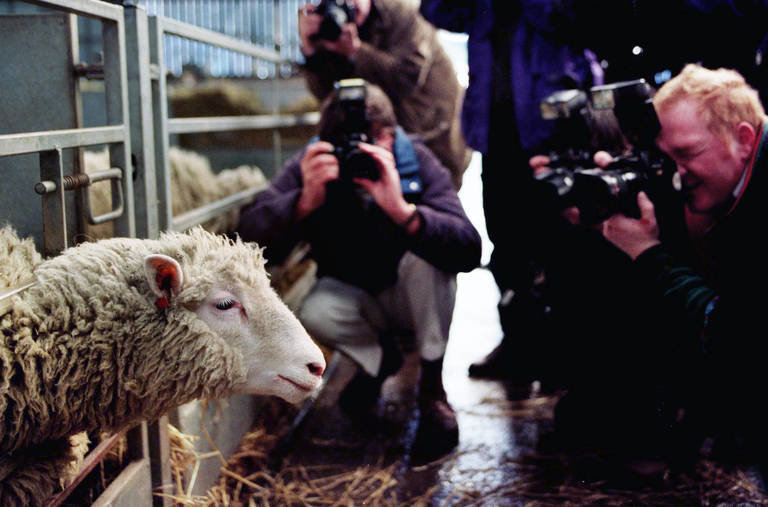

From duplicate dogs to modern mammoths, cloning has come a long way since Dolly the sheep took her first tentative steps.
By Logan Loewenstein, Tuesday, May 3rd, 11:00A.M.
On 5 July 1996, a sheep was born who would go on to inspire entire industries, provide scientists with a new way of helping endangered species, and change medical science in ways that were barely conceivable at the time.
But this was no ordinary sheep. Her very entry to the world was groundbreaking – she was cloned using cells taken from another sheep's mammary gland as part of an experiment conducted by the Roslin Institute in Midlothian, Scotland. They named her Dolly after the singer Dolly Parton.
At that point, scientists had been dabbling with cloning – the process of creating a genetically identical copy of another living being – since the 1950s, when British biologist John Gurdon found a way to clone African clawed frogs. Despite many attempts, repeating the feat in larger mammals had proven an elusive and near-impossible task.
But like many scientific breakthroughs, the experiment that produced Dolly was something of a fluke. The Roslin Institute scientists had been attempting to clone a sheep using a complex process called nuclear transfer. Using electricity, they transferred the mammary gland cell's nucleus into an egg cell from a second sheep. This egg cell now contained all of the DNA from Dolly's mother, and it grew and developed into an embryo in the lab.
Except, this was not supposed to happen. At the time, no one thought that the DNA from an adult cell could possibly give rise to a new embryo. The entire experiment had intended to be a test run for the technology, before the Roslin Institute team conducted it using embryonic cells.
"The cloning of Dolly the sheep showed the world that it was possible to essentially reprogramme all the DNA in the nucleus of an adult cell, so it started behaving like an embryonic cell again, giving rise to a new animal," says Robin Lovell-Badge, who heads the Stem Cell Biology and Developmental Genetics Laboratory at the Francis Crick Institute in London.
Having unexpectedly created an embryo, the Roslin Institute scientists placed it inside a third sheep, which ultimately gave birth to Dolly, to the surprise and bewilderment of the general public and much of the world's media.

Dolly spent her whole life at the Roslin Institute in Scotland. She died when she was just six and a half, after developing lung disease and arthritis (Credit: Getty Images).
As impressive as Dolly was for the public eye, this was not the first instange of successful cloning. In fact the earliest clonings took place in 1885 in experiments with sea urchins. But in 1928, Hans Spemann made history by successfully cloning a salamander. During this time Spemann proposed a “fantastical” experiment: remove the nucleus from an unfertilized egg and replace it with a differentiated embryo nucleus. He argued that by doing so, one might begin to answer the question of whether such a transplant of a single differentiated nucleus can give rise to an entire organism.
Spemann's findings in his salamander experiment paved the way for countless other impressive colonings to take place in the years that followed
Ominous predictions were already being made within days, mostly focused on the grim possibilities of human cloning. Some even suggested that cloning could provide a way of replacing lost children for bereaved parents, while TIME magazine greeted Dolly's arrival with a cover headline that mused provocatively, "Will There Ever Be Another You?"
But on the other side of the world, a Japanese stem cell biologist was observing the events in Scotland with keen interest.
The rise of regenerative medicine
In 1996, Shinyi Yamanaka felt his career was drifting. He had endured a hapless stint as a surgeon, where colleagues reportedly nicknamed him Jamanaka as a pun on the Japanese word for obstacle, because he took too long in the operating theatre.
Now Yamanaka had found himself in a tedious job at Osaka City University Medical School, spending most of his time looking after mice, when he read that scientists had managed to clone a sheep.
He was fascinated by the fact that an adult cell could be reprogrammed in this manner, and began wondering if adding transcription factors – proteins that bind to DNA and turn certain genes on or off – could reprogramme any adult cell back into an embryonic-like state.
After a decade of work, Yamanaka achieved his goal, first with mice and then in human cells. His technology allowed skin or blood cells to be reprogrammed to a pluripotent state – meaning that they could be turned into any cell type in the body – through adding a cocktail of four transcription factors. It was considered such a breakthrough that Yamanaka was later awarded the 2012 Nobel Prize for Physiology and Medicine.
The reason Yamanaka's feat garnered such attention is it allows scientists to take a blood sample from patients and create organoids – tiny pea-sized versions of organs – in the lab that behave identically to the cells within their own body. These can be used to test new drugs, vaccines, or to simply understand some of the basic processes involved in human development.
Scientists are also excited about the potential medical applications for patients with genetic diseases. "It potentially allows you to take cells from a patient, maybe correct a genetic defect, and then use those cells to repair damaged tissue in that patient," says Lovell-Badge. "So this was obviously a really important finding."
The technology behind cloning has also had some more direct medical applications. Scientists at the Oregon Health and Science University Center for Embryonic Cell and Gene Therapy have used some of the steps involved in Dolly's cloning to help prevent women with rare mitochondrial diseases from passing the disorder onto their children. By transferring the nucleus of the mother's eggs into the healthy egg cell of another woman, most or all of the damaged mitochondria can be left behind. The technique has since been dubbed the "three-person baby".
Cloning pets
For the scientists who created Dolly, the most immediate legacy of their work was the survival of their research centre. In 1996, the Roslin Institute was in a precarious financial position and facing government cuts.
Dolly proved to be a lifeline. The scientific and media furore that followed attracted the attention of the Texas-based company ViaGen, who purchased the intellectual property to cloning technology in 1998, providing enough money for the institute to survive until they could source new funding.
Initially the company's main aim was to use cloning to improve livestock breeding, a process that still takes place today, especially for high-value livestock such as bulls. Cloning is also used to bypass the genetic lottery of normal reproduction and transfer desirable genetic changes made in the lab from generation to generation. Some researchers are also looking at combining cloning and genome editing to create animals that are resistant to some common diseases such as the bacterial infections tuberculosis and salmonellosis.
However, over the last six years a new industry has emerged – pet cloning. In 2015, ViaGen began offering its services to pet owners looking to clone their beloved cat or dog. It does not come cheap – the company charges $35,000 (£22,800) to clone a cat, and $50,000 (£38,000) for a dog – but the demand is there. While ViaGen do not disclose the exact number of pets they have cloned so far, Melain Rodriguez, a client services manager at ViaGen said that the figure is in the hundreds.
"It has grown so much since we first started this, and we're cloning more and more pets every year," says Rodriguez. "We've got puppies being born every week. We don't do a lot of advertising, a lot of it is passed on by word of mouth."
Because of the financial outlays involved, Rodriguez explains that 90% of the company's clients simply opt to have their pet's cells preserved – which costs $1,600 (£1,200) – in case they can afford cloning at a later date. The high costs arise from the fact that cloning is still incredibly complex – for the dogs the entire process takes eight months and for cats it takes a year.
"People ask me, 'Why is it so expensive?' and I tell them because there are so many complicated steps involved in the whole process," says Rodriguez. "It's definitely an emotional reason for pet clients. They want to be able to carry on that strong emotional bond that they have with the pet."
The industry has since expanded elsewhere in the globe. Sooam Biotech in South Korea offer dog cloning services, as well as Sinogene in China.
However, many scientists remain uncomfortable about the whole premise. Lovell-Badge argues that there is "no justification" for pet cloning as while the resulting animals will be genetically identical, they will not have the same behavioural characteristics and personalities as all creatures are a product of both genes and their environment.
"People really want their pet that knows them and knows certain tricks and so forth," says George Church, professor of genetics at Harvard Medical School. "In that sense, it's a little bit taking advantage of people's grief."
Reviving extinct species
In the years that followed Dolly's cloning, the central question was whether scientists would ever extend the technology to humans, and the many moral and ethical issues that would invoke.
But while a human embryo was successfully cloned in 2013, the process of creating an entire human being has never been attempted because of the likely public outcry. Chinese scientists did clone the first primates in January 2018, long-tailed macques Zhong Zhong and Hua Hua, but there are currently no suggestions that this work will continue into further primate species.
Instead, most funding is being devoted to using cloning to resurrect animals on the verge of extinction. Efforts are underway to clone both the giant panda and the northern white rhino – a species for which there are just two animals left on the planet – while in the last two years, ViaGen have cloned the black footed ferret and Przewalski's horse, both of which are endangered.
Church is leading the most ambitious project, a quest to revive the woolly mammoth, a species that last lived some 4,000 years ago. His de-extinction company Colossal has already raised £11m ($14.5m) in funding to support the idea, which will involve creating an elephant-mammoth hybrid through taking skin cells from Asian elephants and using cloning technology to reprogram them with mammoth DNA.
Church describes it as more of an "Arctic elephant", which could play a role in helping revitalise the tundra of the far north. "I could think of a very good reason why we would want to create an Arctic elephant, something that had some of the best features of modern elephants and mammoths," he says."And that would be to do with climate change and restoring the Arctic grasslands."
However there are a number of challenges. The project would involve editing Asian elephant skin cells so they can carry mammoth genes, as well as finding a surrogate elephant mother to carry and give birth to the resulting embryo."As a host, elephants and mammoths are really quite different," says Lovell-Badge. "What happens after birth? Is the female elephant going to think, 'What on Earth have I produced?' How is the mammoth baby going to interact with an elephant?"
"Would it be nice for the mammoths?"
Questions have also been asked about whether it is appropriate to revive an extinct animal, given the survival challenges faced by many existing species today – and that mammoths last existed on the planet at a time when Earth's climate and ecosystems were radically different to those of the 21st Century.
Lovell-Badge points out that creating an environment where mammoths could live, along with ensuring there are suitable dietary requirements, could be challenging."It sounds wonderful to say 'Wouldn't it be great to have mammoths back again?'" he argues. "Well would it? Would it be nice for the mammoths?"
The future
But cloning may also have more sobering applications in the coming decades.
In January, surgeons at the University of Maryland School of Medicine transplanted a pig heart into a man with terminal heart disease. It had 10 human genetic modifications that the team hoped would reduce the chances of the organ being rejected.
While the patient sadly only survived for two more months, it captured the attention of doctors around the world who perceived it as a potential way of solving the world's organ transplant shortage.
In Germany – a country that has one of the lowest organ donation rates in Europe – Eckhard Wolf, head of the Center for Innovative Medical Models in Munich, is attempting to clone and breed a range of genetically identical pigs. The idea is to have a suitable population from which organs can be readily harvested and used for so-called xenotransplantation into humans. According to the Organ Transplantation Foundation, there are currently around 8,500 people in Germany diagnosed with organ failure, who have no other treatment options.
Wolf says that there is a need for drastic measures. "The situation is very pressing," he says. "For instance, only about half of the patients who are on the active waiting list for a heart can receive a transplant. Pigs have a number of advantages as donors because the size and function of the organs is relatively fit for humans, genetic engineering is well established in pigs, and the use of pigs is more ethically accepted than non-human primates."
Wolf aims to use cloning to make a number of genetic tweaks on cells under lab conditions, to try to minimise the risk of organ rejection and infection, before creating a generation of pig embryo clones. If all goes smoothly, he intends to begin clinical trials within three years.
However, not everyone is so positive about the use of animals for transplantation purposes. Animal rights activists in Germany have argued that it essentially degrades pigs to the status of organ factories while Germany's Animal Welfare Association have described the project as being ethically questionable.
Some countries have put in place total bans on all forms of human cloning, others have banned reproductive cloning but still allow therapeutic cloning and some have so far failed to introduce any regulations, often as the result of a failure to reach agreement. Many countries also have regulations on the derivation and use in research of human embryonic stem cells.
For example, Belgium, Sweden and Spain allow therapeutic cloning and human embryonic stem cell use in similar frameworks to the UK, and there is now public pressure in Germany and Italy to revisit their legislation, while Ireland is already doing so.
In Asia, the picture is very different. Japan, China, Singapore and South Korea all follow the UK's approach. India is embracing human embryonic stem cell research, as realised recently at an Indo-UK meeting organised by the Royal Society and aimed at spawning international collaborations in the field. But so far it still has a ban on therapeutic and reproductive cloning.
South America is as divided as Europe. Ecuador bans embryonic stem cell research and both types of cloning; Brazil bans cloning, but a new law allows and funds embryonic stem cell research; Argentina, Chile, Peru and Uruguay ban both types of cloning, and legislation either allows or does not cover embryonic stem cells, and only Colombia permits therapeutic cloning as well as human embryonic stem cell research.
In the Middle East, only Israel and Turkey have any relevant legislation. Israel permits therapeutic cloning and embryonic stem cell research while banning reproductive cloning. Turkey has effectively the same--although stem cell research is not explicitly permitted, it is just not mentioned.
For the countries that do not have national legislation we can gain an idea of their attitudes from the ill-fated attempts to gain consensus at the European and international levels.
More than 25 years on from the experiment that captured the world's imagination, cloning is just as relevant and controversial a topic as it was back when Dolly was born.